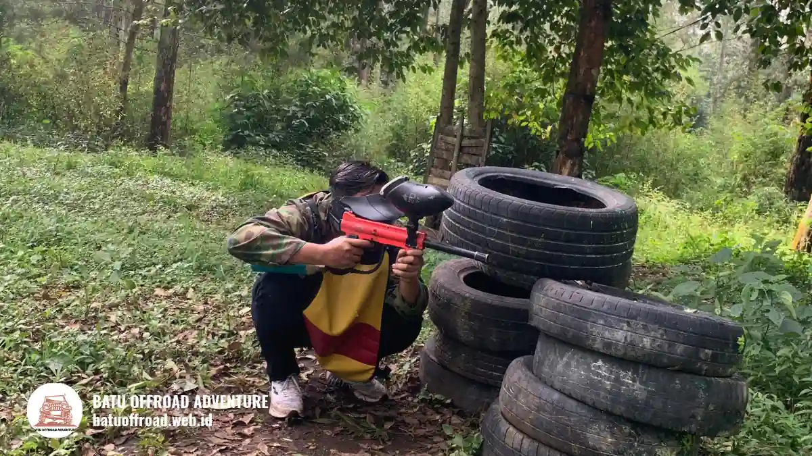

Paintball Coban Talun Seru Bareng Rombongan di Alam Batu
Paintball Coban Talun adalah permainan tim berbasis tembak penanda cat yang dimainkan di kawasan alam Batu, cocok untuk rombongan keluarga, teman, dan kantor.
- Paintball adalah permainan tim yang menembakkan bola cat dengan marker, dengan perlengkapan proteksi wajib.
- Kawasan Coban Talun di Batu memberi suasana alam yang sejuk dan cocok untuk acara bersama.
- Cocok untuk keluarga, komunitas, teman, dan gathering kantor yang sehat dan siap aktif.
- Bisa digabung dengan offroad agar kunjungan ke Batu lebih lengkap.
- Keselamatan bergantung pada masker, arahan wasit, dan kepatuhan pemain.
Apa Itu Paintball dan Mengapa Cocok Dimainkan di Coban Talun?
Paintball adalah permainan tim yang menggunakan penanda bertenaga gas untuk menembakkan bola cat, dan kawasan alam Coban Talun di Batu memberi suasana lapangan yang segar.
Paintball lahir dari permainan sederhana. Menurut catatan sejarah olahraga ini, permainan paintball pertama dimainkan pada 27 Juni 1981 di New Hampshire, Amerika Serikat, dengan 12 pemain. Sejak itu paintball berkembang menjadi rekreasi tim yang dimainkan di banyak negara, termasuk Indonesia.
Coban Talun berada di wilayah Batu, Jawa Timur, daerah pegunungan yang dikenal berhawa sejuk. Udara terbuka, pepohonan, dan kontur alam membuat permainan terasa berbeda dari ruangan tertutup. Pemain bergerak, berlindung, dan menyusun strategi dengan latar suasana alam.
Pengalaman ini mudah dinikmati oleh pemula. Tidak diperlukan kemampuan khusus, cukup kondisi tubuh yang sehat dan kemauan mengikuti arahan wasit.
Bagaimana Cara Main Paintball Secara Singkat?
Cara main paintball dimulai dari pengarahan keselamatan, pemakaian masker dan pelindung, pembagian tim, lalu bermain sesuai skenario sambil mengikuti arahan wasit lapangan.
Urutan umum satu sesi bermain adalah sebagai berikut:
- Peserta berkumpul dan mendengarkan pengarahan keselamatan dari wasit atau pemandu.
- Peserta mengenakan masker pelindung wajah dan perlengkapan lain yang disediakan.
- Wasit menjelaskan cara memegang dan menggunakan marker.
- Peserta dibagi menjadi dua tim atau lebih.
- Wasit menjelaskan skenario, batas area, dan tanda mulai serta berhenti.
- Permainan berjalan, dan pemain yang terkena bola cat mengikuti aturan eliminasi yang berlaku.
- Setelah ronde selesai, peserta berkumpul untuk evaluasi singkat dan bersiap ke ronde berikutnya.
Dari sisi teknis, bola cat paintball pada umumnya berkaliber 0,68 inci atau sekitar 17 milimeter, yang menjadi standar luas dalam olahraga ini.
Karena itu marker dan bola cat yang digunakan di lapangan resmi umumnya dirancang untuk ukuran tersebut dan dipakai dengan pengaturan tenaga yang aman.
Setiap penyelenggara dapat menyesuaikan aturan teknis. Tanyakan detail skenario dan durasi kepada penyelenggara sebelum hari bermain.
Perlengkapan Apa Saja yang Dipakai Pemain?
Perlengkapan utama paintball meliputi masker pelindung wajah, penanda atau marker, tabung gas, wadah bola cat, dan pakaian tertutup yang nyaman untuk bergerak.

Permainan paintball Coban Talun dengan perlengkapan masker dan marker standar keselamatan
Berikut perlengkapan yang umum digunakan:
- Masker pelindung wajah: melindungi mata, wajah, dan telinga. Ini perlengkapan terpenting dan tidak boleh dilepas selama berada di area permainan.
- Marker: alat penembak bola cat yang digerakkan tenaga gas.
- Tabung gas: sumber tenaga marker, ditangani oleh petugas atau pemain sesuai arahan.
- Hopper atau wadah bola cat: menyimpan bola cat yang akan ditembakkan.
- Pelindung tambahan: misalnya pelindung leher atau rompi, tergantung penyedia.
- Pakaian pribadi: baju lengan panjang, celana panjang, dan sepatu tertutup.
Siapa Saja yang Cocok Bermain Paintball di Coban Talun?
Paintball di Coban Talun cocok untuk rombongan keluarga, teman, komunitas, dan karyawan kantor yang sehat, mampu bergerak aktif, serta bersedia mengikuti aturan keselamatan.
Kelompok yang umum memilih paintball antara lain:
- Rombongan teman dan komunitas: hobi, alumni, atau kelompok sepeda dan motor.
- Keluarga besar: untuk acara reuni atau liburan bersama.
- Tim kantor: untuk outing dan kegiatan membangun kekompakan.
- Kelompok sekolah atau kampus: tergantung ketentuan usia penyelenggara.
Ada batasan yang perlu diperhatikan. Peserta dengan kondisi kesehatan tertentu, misalnya masalah jantung, pernapasan, atau cedera sendi, sebaiknya berkonsultasi dengan dokter sebelum ikut. Ketentuan usia minimal dan izin orang tua dapat berbeda antar penyelenggara, jadi konfirmasikan lebih dulu.
Apa Manfaat Paintball bagi Rombongan?
Manfaat paintball bagi rombongan meliputi peningkatan kekompakan, latihan komunikasi, aktivitas fisik ringan hingga sedang, serta pengalaman bersama yang mudah diingat.
Manfaat yang paling sering dirasakan:
- Kekompakan tim: peserta harus berbagi informasi dan membagi peran.
- Komunikasi yang lebih lugas: instruksi singkat dan jelas menentukan hasil permainan.
- Aktivitas fisik: bergerak, berlari kecil, dan berlindung membuat tubuh aktif.
- Suasana cair: peserta dari berbagai latar belakang lebih mudah akrab.
- Kenangan bersama: permainan menghasilkan cerita dan foto yang dibahas lama setelahnya.
Manfaat ini bersifat umum dan hasilnya bervariasi tergantung kelompok serta cara acara disusun.
Format Permainan Apa yang Umum Dimainkan?
Format permainan paintball yang umum meliputi tim melawan tim, rebut bendera, eliminasi, dan misi bertahan, dengan aturan yang disesuaikan jumlah peserta dan lokasi.
Format yang sering dipilih:
- Tim melawan tim: dua kelompok saling berhadapan, paling mudah dipahami pemula.
- Rebut bendera: setiap tim mengambil bendera lawan dan membawanya ke basis sendiri.
- Eliminasi: pemain yang terkena dikeluarkan sampai satu tim tersisa.
- Misi bertahan: satu tim menjaga titik tertentu dalam waktu yang ditentukan.
Pilih format sederhana bila banyak peserta baru. Format yang lebih kompleks cocok untuk kelompok yang sudah terbiasa.
Bagaimana Menggabungkan Paintball dengan Wisata Lain di Batu?
Paintball dapat digabung dengan wisata alam dan petualangan lain di Batu, seperti offroad, sehingga rombongan memperoleh agenda lengkap dalam satu hari kunjungan.
Kombinasi ini praktis bagi rombongan karena transportasi, waktu, dan koordinasi dapat dirapikan dalam satu paket. Offroad memberi sensasi medan alam, sedangkan paintball menghadirkan permainan strategi.
Apa yang Perlu Disiapkan Sebelum Datang?
Persiapan sebelum bermain paintball di Coban Talun mencakup pakaian nyaman, alas kaki tertutup, kondisi tubuh prima, konfirmasi jadwal, dan informasi jumlah peserta kepada penyelenggara.
Daftar Persiapan Praktis
- Kenakan baju lengan panjang dan celana panjang yang boleh terkena cat.
- Pakai sepatu tertutup dengan alas yang tidak licin.
- Bawa pakaian ganti, handuk kecil, dan air minum.
- Makan ringan sebelum bermain, hindari datang dalam keadaan lapar.
- Siapkan obat pribadi bila diperlukan.
- Konfirmasi jadwal, jumlah peserta, dan format permainan ke penyelenggara.
- Cek prakiraan cuaca, terutama saat musim hujan.
Apa Kesalahan Umum Pemain Pemula?
Kesalahan umum pemain paintball pemula meliputi membuka masker di area permainan, menembak terlalu dekat, mengabaikan arahan wasit, dan memakai pakaian yang kurang tertutup.
Kesalahan lain yang kerap muncul:
- Tidak memperhatikan pengarahan keselamatan di awal.
- Berlari tanpa melihat medan sehingga tergelincir.
- Tidak berkomunikasi dengan rekan satu tim.
- Menggunakan marker sembarangan di luar area permainan.
- Terlalu memaksakan diri saat lelah atau kepanasan.
Tips Agar Pengalaman Paintball Lebih Seru
Pengalaman paintball lebih seru bila rombongan menentukan strategi sebelum bermain, membagi peran tim, menjaga komunikasi, dan tetap mengutamakan keselamatan di setiap ronde.
Tips yang dapat langsung dipakai:
- Tunjuk satu pemimpin tim untuk memberi arahan.
- Gunakan isyarat sederhana agar tidak saling berteriak berlebihan.
- Manfaatkan penghalang alam untuk berlindung.
- Gantian peran antara penyerang dan penjaga.
- Minum air di sela ronde.
- Ambil foto bersama setelah sesi selesai.
Kesimpulan
Paintball Coban Talun menawarkan permainan tim yang seru di suasana alam Batu dan mudah diikuti pemula.
Kunci pengalaman yang aman adalah memakai perlengkapan proteksi, mengikuti arahan wasit, dan memilih format yang sesuai kelompok. Rombongan yang ingin acara lebih lengkap dapat menggabungkannya dengan offroad.
Ingin merasakan serunya langsung? Hubungi Batu Offroad Adventure di 0812-3398-9707 untuk info paket dan booking.
Penulis: Sholikhatun Nikmah
Artikel Terkait